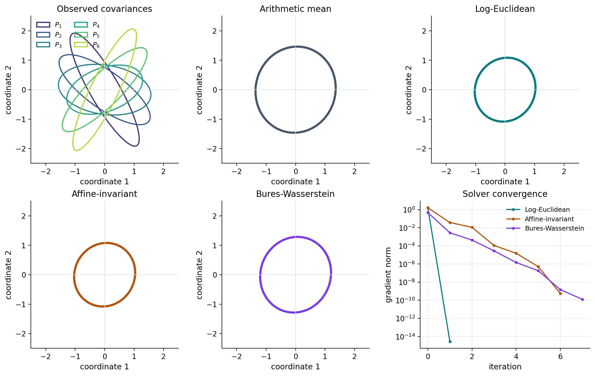

Comparing Fréchet Means of SPD Matrices#
Symmetric positive-definite (SPD) matrices appear as covariance matrices, diffusion tensors, and kernel matrices. There is no single distinguished Riemannian metric on the SPD cone, so a Fréchet mean depends on the geometry chosen for the application. The objective extends Fréchet’s metric-space notion of a mean [Fréchet, 1948, Karcher, 1977].
For observations \(P_1,\ldots,P_N\) and a distance \(d_g\) induced by geometry \(g\), the Fréchet objective is
We compare three common choices:
Geometry |
Distance |
|---|---|
Log-Euclidean |
\(\lVert\log P-\log Q\rVert_F\) |
Affine-invariant |
\(\lVert\log(P^{-1/2}QP^{-1/2})\rVert_F\) |
Bures-Wasserstein |
\(\bigl[\operatorname{tr}P+\operatorname{tr}Q-2\operatorname{tr}(P^{1/2}QP^{1/2})^{1/2}\bigr]^{1/2}\) |
The log-Euclidean metric is flat in matrix-logarithm coordinates. Its mean has the closed form
The other two means generally require iteration. The affine-invariant metric is invariant under arbitrary invertible congruences, while the Bures-Wasserstein metric is the covariance component of quadratic optimal transport between centered Gaussian distributions. These constructions are developed, respectively, by Arsigny et al. [2007], Moakher [2005], and Bhatia et al. [2019]; the Gaussian optimal-transport interpretation is given by Malagò et al. [2018].
import jax
jax.config.update("jax_enable_x64", True)
import jax.numpy as jnp
import matplotlib.pyplot as plt
import numpy as np
from matplotlib.patches import Ellipse
from geojax.geometry import (
SPDAffineInvariant,
SPDBuresWasserstein,
SPDLogEuclidean,
)
from geojax.learning import frechet_mean
from geojax.optimization import BarzilaiBorwein
plt.rcParams.update({
"figure.dpi": 200,
"savefig.dpi": 240,
"font.size": 11,
"axes.titlesize": 12,
"axes.labelsize": 11,
"xtick.labelsize": 10,
"ytick.labelsize": 10,
"legend.fontsize": 9,
"axes.spines.top": False,
"axes.spines.right": False,
})
Construct covariance observations#
We use \(2\times2\) covariance matrices so that every observation and estimate can be drawn as an ellipse. The directions of the ellipse are the eigenvectors of the covariance, and its semiaxis lengths are the square roots of the eigenvalues.
The observations deliberately combine pronounced anisotropy with changing orientations. If all matrices commuted, several geometric differences would be much harder to see.
def rotation(theta):
cosine, sine = jnp.cos(theta), jnp.sin(theta)
return jnp.array([[cosine, -sine], [sine, cosine]])
def covariance(theta, eigenvalues):
basis = rotation(theta)
return basis @ jnp.diag(jnp.asarray(eigenvalues)) @ basis.T
samples = jnp.stack(
[
covariance(-1.05, (4.8, 0.25)),
covariance(-0.62, (3.4, 0.40)),
covariance(-0.15, (2.5, 0.70)),
covariance(0.35, (1.8, 0.55)),
covariance(0.78, (3.8, 0.30)),
covariance(1.12, (5.2, 0.22)),
]
)
geometries = {
"Log-Euclidean": SPDLogEuclidean(size=(2, 2)),
"Affine-invariant": SPDAffineInvariant(size=(2, 2)),
"Bures-Wasserstein": SPDBuresWasserstein(size=(2, 2)),
}
print("Number of observations:", len(samples))
for name, geometry in geometries.items():
valid = jax.vmap(geometry.belongs)(samples)
print(f"{name:20s}: all observations valid = {bool(jnp.all(valid))}")
Number of observations: 6
Log-Euclidean : all observations valid = True
Affine-invariant : all observations valid = True
Bures-Wasserstein : all observations valid = True
Solve one Fréchet problem per geometry#
The code below is intentionally geometry-agnostic. Only the geometry passed to
geojax.learning.frechet_mean() changes. The learning function validates
the observations, constructs the weighted squared-distance objective, and
delegates its minimization to the supplied GeoJAX solver. All three runs start
from the arithmetic mean and use the same solver settings.
The objective values should not be compared directly across rows because the three metrics use different units. The estimates, eigenvalues, determinants, and convergence histories are directly informative.
initial = jnp.mean(samples, axis=0)
estimates = {}
histories = {}
final_costs = {}
mean_results = {}
for name, geometry in geometries.items():
result = frechet_mean(
geometry,
samples,
initial_point=initial,
solver=BarzilaiBorwein(
initial_stepsize=0.5,
maxiter=120,
tolgradnorm=1e-9,
verbosity=0,
),
tol=1e-9,
)
mean_results[name] = result
estimates[name] = result.point
histories[name] = result.diagnostics["history"]
final_costs[name] = result.objective
print(
f"{'geometry':20s} {'iter':>5s} {'cost':>12s} "
f"{'grad norm':>12s} {'det(mean)':>12s}"
)
print("-" * 68)
for name in geometries:
history = histories[name]
print(
f"{name:20s} {history[-1].iter:5d} {final_costs[name]:12.6f} "
f"{history[-1].gradnorm:12.3e} {float(jnp.linalg.det(estimates[name])):12.6f}"
)
geometry iter cost grad norm det(mean)
--------------------------------------------------------------------
Log-Euclidean 1 2.733541 2.726e-15 1.242951
Affine-invariant 6 2.735411 5.737e-10 1.242951
Bures-Wasserstein 7 0.892222 1.272e-10 2.376709
Validate the log-Euclidean result#
The closed-form log-Euclidean mean gives an independent check of the numerical optimization.
log_geometry = geometries["Log-Euclidean"]
log_samples = jax.vmap(log_geometry.logm)(samples)
closed_form = log_geometry.expm(jnp.mean(log_samples, axis=0))
closed_form_error = jnp.linalg.norm(estimates["Log-Euclidean"] - closed_form)
print("Closed-form log-Euclidean mean:\n", closed_form)
print(f"GeoJAX learning error: {float(closed_form_error):.3e}")
Closed-form log-Euclidean mean:
[[1.06239834 0.07742265]
[0.07742265 1.17559048]]
GeoJAX learning error: 1.328e-15
Visual comparison#
The arithmetic mean is included as a Euclidean baseline. The bottom-right panel puts all solver histories on a common logarithmic gradient scale. The Bures-Wasserstein ellipse is expected to be larger here: that geometry averages covariance square roots through an optimal-transport construction, whereas the log-Euclidean and affine-invariant metrics penalize multiplicative dispersion.
def draw_covariance(ax, matrix, color, label=None, alpha=1.0, linewidth=2.0):
values, vectors = np.linalg.eigh(np.asarray(matrix))
order = np.argsort(values)[::-1]
values = values[order]
vectors = vectors[:, order]
angle = np.degrees(np.arctan2(vectors[1, 0], vectors[0, 0]))
ellipse = Ellipse(
(0.0, 0.0),
width=2.0 * np.sqrt(values[0]),
height=2.0 * np.sqrt(values[1]),
angle=angle,
facecolor="none",
edgecolor=color,
linewidth=linewidth,
alpha=alpha,
label=label,
)
ax.add_patch(ellipse)
def format_covariance_axis(ax, title):
ax.axhline(0.0, color="0.88", linewidth=0.8)
ax.axvline(0.0, color="0.88", linewidth=0.8)
ax.set(xlim=(-2.5, 2.5), ylim=(-2.5, 2.5), title=title)
ax.set_aspect("equal")
ax.set_xlabel("coordinate 1")
ax.set_ylabel("coordinate 2")
fig, axes = plt.subplots(2, 3, figsize=(11.5, 7.2), constrained_layout=True)
axes = axes.ravel()
sample_colors = plt.cm.viridis(np.linspace(0.12, 0.88, len(samples)))
mean_colors = {
"Log-Euclidean": "#007C83",
"Affine-invariant": "#B45309",
"Bures-Wasserstein": "#7C3AED",
}
for index, (matrix, color) in enumerate(zip(samples, sample_colors), start=1):
draw_covariance(axes[0], matrix, color, label=f"$P_{index}$", linewidth=1.6)
format_covariance_axis(axes[0], "Observed covariances")
axes[0].legend(frameon=False, fontsize=9, ncol=2)
draw_covariance(axes[1], initial, "#475569", linewidth=3.0)
format_covariance_axis(axes[1], "Arithmetic mean")
for axis, name in zip(axes[2:5], geometries):
draw_covariance(axis, estimates[name], mean_colors[name], linewidth=3.0)
format_covariance_axis(axis, name)
for name, history in histories.items():
gradient_norms = np.maximum([entry.gradnorm for entry in history], 1e-16)
axes[5].semilogy(
np.arange(len(history)),
gradient_norms,
marker="o",
markersize=3,
color=mean_colors[name],
label=name,
)
axes[5].set(
title="Solver convergence",
xlabel="iteration",
ylabel="gradient norm",
)
axes[5].grid(alpha=0.25)
axes[5].legend(frameon=False, fontsize=9)
plt.show()

Interpretation#
There is no geometry-independent answer to the averaging problem. A useful choice depends on which transformations and physical interpretation should be respected:
Use the log-Euclidean metric for a computationally simple flat model in logarithmic coordinates.
Use the affine-invariant metric when invariance under \(P\mapsto APA^\top\) for invertible \(A\) is central.
Use the Bures-Wasserstein metric when covariances represent Gaussian spread and optimal transport is the intended comparison.
Changing samples is enough to repeat the comparison in higher dimensions;
only the ellipse visualization is specific to \(\operatorname{SPD}(2)\).
References#
Vincent Arsigny, Pierre Fillard, Xavier Pennec, and Nicholas Ayache. Geometric means in a novel vector space structure on symmetric positive-definite matrices. SIAM Journal on Matrix Analysis and Applications, 29(1):328–347, 2007. doi:10.1137/050637996.
Rajendra Bhatia, Tanvi Jain, and Yongdo Lim. On the Bures–Wasserstein distance between positive definite matrices. Expositiones Mathematicae, 37(2):165–191, 2019. doi:10.1016/j.exmath.2018.01.002.
Maurice Fréchet. Les éléments aléatoires de nature quelconque dans un espace distancié. Annales de l'Institut Henri Poincaré, 10(4):215–310, 1948. URL: https://www.numdam.org/item/AIHP_1948__10_4_215_0/.
Hermann Karcher. Riemannian center of mass and mollifier smoothing. Communications on Pure and Applied Mathematics, 30(5):509–541, 1977. doi:10.1002/cpa.3160300502.
Luigi Malagò, Luigi Montrucchio, and Giovanni Pistone. Wasserstein Riemannian geometry of gaussian densities. Information Geometry, 1:137–179, 2018. doi:10.1007/s41884-018-0014-z.
Maher Moakher. A differential geometric approach to the geometric mean of symmetric positive-definite matrices. SIAM Journal on Matrix Analysis and Applications, 26(3):735–747, 2005. doi:10.1137/S0895479803436937.